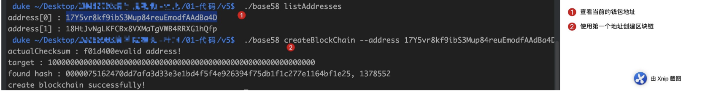

一、修改交易结构
1. TXInput
type TXInput struct {
//引用output所在交易ID
TXID []byte
//应用output的索引值
VoutIndex int64
//解锁脚本
//ScriptSig string
//签名
Signature []byte
//公钥
PublicKey []byte
}
2. TXOutput
type TXOutput struct {
//接收的金额
Value float64
//锁定脚本
//ScriptPubKey string
//公钥哈希
PublicKeyHash []byte
}
3.检查pubKeyHash是否可以解锁utxo
可以理解为解锁条件，真正的能解锁与否还要看后面的verify动作（稍后介绍）
//解锁脚本
//存储在output中的其实是公钥的哈希，我们去锁定的时候也是输入地址，然后内部逆向算出哈希存储的
func (input *TXInput) CanUnlockUTXOWith(pubKeyHash []byte /*收款人的公钥哈希*/) bool {
hash := HashPubKey(input.PublicKey)
return bytes.Compare(hash, pubKeyHash) == 0
}
4.检查utxo是否可以被pubKeyHash解锁
3，4步两个函数是相对的，辅助功能，用于在遍历交易的时候进行过滤
//检测是否被某个地址锁定
func (output *TXOutput) CanBeUnlockedWith(pubKeyHash []byte /*收款人的公钥哈希*/) bool {
return bytes.Compare(output.PublicKeyHash, pubKeyHash) == 0
}
5.锁定脚本
之前的版本未涉及到锁定，在创建utxo的时候直接赋值为地址就算是锁定了，这里需要逆向求出来pubKeyHash，所以写了个锁定函数
//锁定脚本
func (output *TXOutput) Lock(address string /*付款人的地址*/) {
//先decode58
pubKeyHash := Base58Decode([]byte(address))
//去除掉version和checksum
pubKeyHash = pubKeyHash[1:len(pubKeyHash)-4]
//使用公钥哈希锁定该output
output.PublicKeyHash = pubKeyHash
}
6.提供创建NewTXOutput函数
由于引入了Lock方法，无法像之前一样直接定义结构了，所以需要一个额外的函数。
func NewTXOutput(value float64, address string) *TXOutput {
txoutput := TXOutput{value, nil}
txoutput.Lock(address)
return &txoutput
}
二、调整代码
1.更新NewCoinbaseTX
- TXInput的pubKey字段添加为矿工输入的数据
- TXOutput使用NewTXOutput来代替
func NewCoinbaseTX(address string, data string) *Transaction {
...
//比特币系统，对于这个input的id填0，对索引填0xffff，data由矿工填写，一般填所在矿池的名字
input := TXInput{nil, -1, nil, []byte(data)}
output := NewTXOutput(reward, address)
txTmp := Transaction{nil, []TXInput{input}, []TXOutput{*output}}
txTmp.setHash()
return &txTmp
}
2.更新NewUTXOTransaction
我们创建新的交易一定是要使用钱包里面的公钥私钥，所以整个步骤如下：
- 打开钱包，根据创建人的address找到对应的钱包（银行卡）
- 查找可用的utxo，注意此时传递的不再是地址，而是地址的公钥哈希：pubKeyHash
- 创建输入
- 创建输出（付款，找零）
- 使用私钥对交易进行签名
代码如下：
func NewTransaction(from, to string, amount float64, bc *BlockChain) *Transaction {
...
//第一步：打开钱包，根据创建人的address找到对应的钱包（银行卡）
//返回当前的钱包容器，加载到内存，注意，不会创建新的秘钥对
ws, err := NewWallets()
if err != nil {
fmt.Println("no wallet.dat, will create one!")
}
wallet := ws.WalletsMap[from]
if wallet == nil {
fmt.Printf("本地没有 %s 的钱包，无法创建交易\n", from)
return nil
}
privateKey := wallet.PrivateKey
pubKey := wallet.PubKey
pubKeyHash := HashPubKey(wallet.PublicKey)
//第二步：查找可用的utxo，注意此时传递的不再是地址，而是地址的公钥哈希：pubKeyHash
validUTXOs /*本次支付所需要的utxo的集合*/ , total /*返回utxos所包含的金额*/ = bc.FindSuitableUTXOs(pubKeyHash, amount)
...
//第三步：创建输入
//调整input的参数，签名填nil，后面会有签名函数负责填充
input := TXInput{[]byte(txid), index, nil, wallet.PublicKey /*这里千万别错误的填哈希值，这是个坑啊！！*/}
...
//第四步：创建输出（付款，找零）
//调用函数生成新的output
output := NewTXOutput(amount, to)
outputs = append(outputs, *output)
if total > amount {
//找零
output = NewTXOutput(total-amount, from)
outputs = append(outputs, *output)
}
//第五步：使用私钥对交易进行签名
//TODO
}
这是后就可以编译了，把FindSuitableUTXOs直接屏蔽掉
3.更新FindSuitableUTXOs
func (bc *BlockChain) FindUTXOTransactions(pubKeyHash []byte) [] Transaction {
//将对应的address替换成pubKeyHash即可
}
同理更新FindSuitableUTXOs，FindUTXOs函数，同时修改GetBalance如下，将参数先设置为空，方便编译过
func (cli *CLI)GetBalance(address string) {
...
//utxos := bc.FindUTXOs(address)
utxos := bc.FindUTXOs([]byte{})
}
4.编译测试
编译通过即可(目前没法测试)
5.获取余额
获取余额需要指定地址，通过遍历整个账本，从而找到这个地址可用的utxo，为此我们要做两件事：
校验地址的有效性
传递过来的地址有可能是无效的，无效的地址直接返回即可。
逆推出公钥哈希
并不是所有的地址都是本地生成的，有可能是别人的地址，所以我们需要逆推而不是打开钱包去查找。
遍历账本
调用FindUTXOs函数
代码如下：
func (cli *CLI) GetBalance(address string) {
bc := GetBlockChainObj()
defer bc.db.Close()
//这里添加
checkAddress(address)
//这里修改
pubKeyHash := Base58Decode([]byte(address))
pubKeyHash = pubKeyHash[1: len(pubKeyHash)-addressCheckSumLen]
utxos := bc.FindUTXOs(pubKeyHash)
var total float64
for _, utxo := range utxos {
total += utxo.Value
}
fmt.Printf("The balance of %s is : %f\n", address, total)
}
6. 校验地址的有效性
func isValidAddress(address string) bool {
//1. 逆向求出pubKeyHash数据
//2. 得到version + 哈希1 部分，并做checksum运算
//3. 与实际checksum比较，如果相同，则地址有效，反之则无效
pubKeyHash := Base58Decode([]byte(address))
//防止输入的过短引起下面访问越界
if len(pubKeyHash) < 4 {
return false
}
payload := pubKeyHash[:len(pubKeyHash)-4]
actualCheckSum := pubKeyHash[len(pubKeyHash)-4:]
fmt.Printf("actualCheckSum : %x\n", actualCheckSum)
targetCheckSum := checksum(payload)
fmt.Printf("targetCheckSum : %x\n", targetCheckSum)
return bytes.Compare(actualCheckSum, targetCheckSum) == 0
}
添加一个简单的校验函数，打印log
func checkAddress(address string) {
if !isValidAddress(address) {
fmt.Println("not valid address :", address)
os.Exit(1)
}
fmt.Println("valid address!")
}
6.创建区块链账本
这个函数已经实现，加上简单的地址校验即可(上面刚刚实现的)，其余的不用变

7.测试
- 创建函数

- 获取余额

8.小结
至此我们已经将真实的地址加入到程序中了。但是交易还没有签名和校验，下节介绍